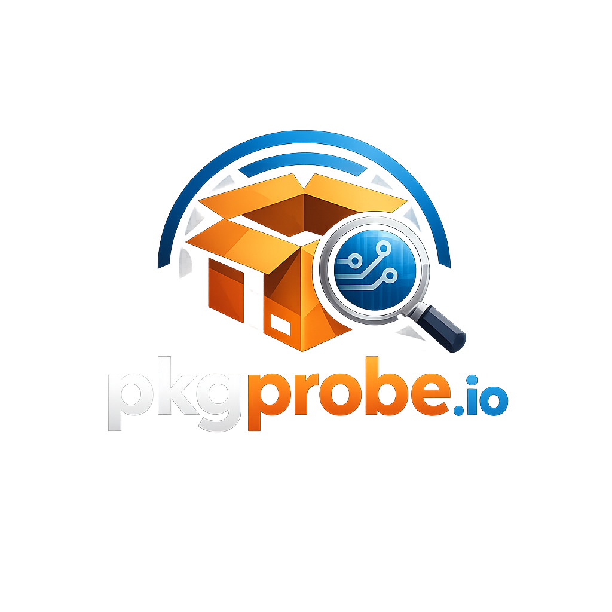

Analyze MSI, EXE, and MSIX packages before deployment. Extract metadata, detect registry changes, flag vulnerabilities — in seconds.
pkgprobe is available on PyPI and runs anywhere Python 3.9+ is installed. No agent. No cloud dependency. Fully local analysis.
Join the community building the world's most comprehensive Windows installer dataset. Free forever, open source.